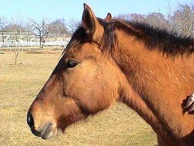
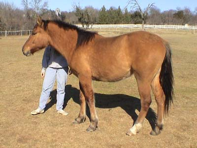
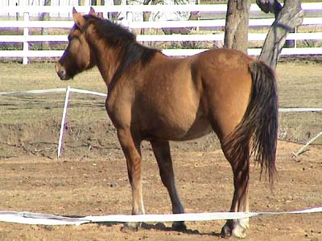
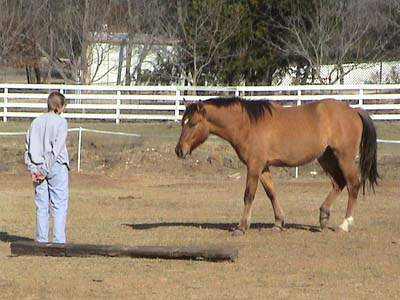
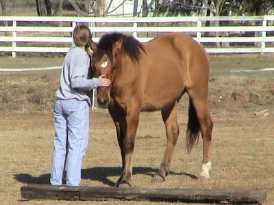
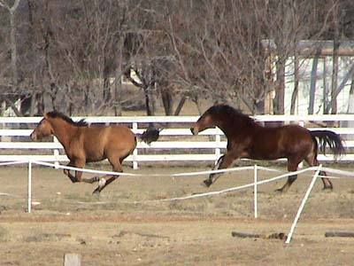
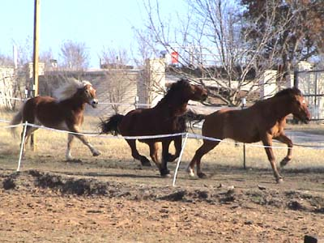
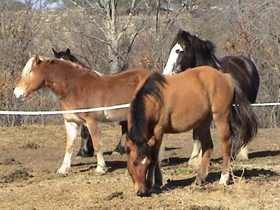

The New Filly
She's a Belgian/QH cross.
Coming two this year, and very sensible.

Such a kind eye and no spook to her.
She just watches and likes attention.

I'd say a little butt high, but well
balanced at this point. In person, she seems young and baby-like.

She's got the dorsal stripe and primitive
markings on her legs. I also see some dapples coming through. I'm eager
to see her color when she sheds out.

Nice and friendly.

She's not pushy like Emma, but if
she notices you walking toward her, she comes to meet you.

Thuy seemed to think he was a stallion.
He did the head snaking and tried to chase her into submission. He didn't
consider that she's fitter, and he absolutely wore himself out...

We watched the running, and if it
got bad I'd step in and stop the two from chasing her. I did separate them
for the evening, so I didn't have to worry about them at night. She and
Emma got along fine without the two guys interfering.

I think she's around Thuy and Adamir's
height already - around 15 hh. Nowhere near the body of my guys, but I
do see more draftiness than in the average two year old.
I think she'll be a good fun horse, or
even a nice using horse. With her mind, I bet she'd be good for driving.
I don't think she's going to have the flash to be a top performance horse.
She doesn't prance around to show off - just nice and steady.